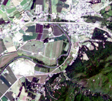
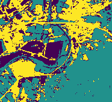

Classification¶
In this example we will do some simple cell classification based on multiband imagery and a target/label raster. As a part of the process we’ll explore the cross-validation support in SparkML.
Setup¶
First some setup:
In [5]:
import astraea.spark.rasterframes._
import astraea.spark.rasterframes.ml.{NoDataFilter, TileExploder}
import geotrellis.raster._
import geotrellis.raster.render._
import geotrellis.raster.io.geotiff.SinglebandGeoTiff
import org.apache.spark.ml.Pipeline
import org.apache.spark.ml.classification.DecisionTreeClassifier
import org.apache.spark.ml.evaluation.MulticlassClassificationEvaluator
import org.apache.spark.ml.feature.VectorAssembler
import org.apache.spark.ml.tuning.{CrossValidator, ParamGridBuilder}
import org.apache.spark.sql._
import astraea.spark.rasterframes.datasource.geotiff
implicit val spark = SparkSession.builder().
master("local[*]").appName(getClass.getName).getOrCreate().withRasterFrames
spark.sparkContext.setLogLevel("ERROR")
import spark.implicits._
// Utility for reading imagery from our test data set
def readTiff(name: String): RasterFrame = spark.read.geotiff.loadRF(s"../samples/$name")
<console>:45: error: value geotiff is not a member of org.apache.spark.sql.DataFrameReader
def readTiff(name: String): RasterFrame = spark.read.geotiff.loadRF(s"../samples/$name")
^
Loading Data¶
The first step is to load multiple bands of imagery and construct a single RasterFrame from them. To do this we:
- Identify the GeoTIFF filename.
- Read the TIFF raster
- Convert to a raster frame of
tileSizesized tiles, with an appropriate column name - Use the RasterFrames
spatialJoinfunction to create a new RasterFrame with a column for each band
In [1]:
val filenamePattern = "L8-%s-Elkton-VA.tiff"
val bandNumbers = 2 to 7
val bandColNames = bandNumbers.map(b ⇒ s"band_$b").toArray
val tileSize = 10
// For each identified band, load the associated image file
val joinedRF = bandNumbers.
map { b ⇒ (b, filenamePattern.format("B" + b)) }.
map { case (b, f) ⇒ (b, readTiff(f)) }.
map { case (b, t) ⇒ t.projectedRaster.toRF(tileSize, tileSize, s"band_$b") }.
reduce(_ spatialJoin _)
Intitializing Scala interpreter ...
Spark Web UI available at http://172.18.0.2:4041
SparkContext available as 'sc' (version = 2.2.0, master = local[*], app id = local-1531928603249)
SparkSession available as 'spark'
<console>:32: error: not found: value readTiff
map { case (b, f) ⇒ (b, readTiff(f)) }.
^
<console>:33: error: value projectedRaster is not a member of Any
map { case (b, t) ⇒ t.projectedRaster.toRF(tileSize, tileSize) }.
^
We should see a single spatial_key column along with 6 columns of
tiles.
In [3]:
joinedRF.printSchema()
root
|-- spatial_key: struct (nullable = true)
| |-- col: integer (nullable = false)
| |-- row: integer (nullable = false)
|-- band_2: rf_tile (nullable = true)
|-- band_3: rf_tile (nullable = true)
|-- band_4: rf_tile (nullable = true)
|-- band_5: rf_tile (nullable = true)
|-- band_6: rf_tile (nullable = true)
|-- band_7: rf_tile (nullable = true)
Similarly pull we pull in the target label data. When load the target
label raster we have to convert the cell type to Double to meet
expectations of SparkML.
In [4]:
val targetCol = "target"
val target = readTiff(filenamePattern.format("Labels")).
mapTile(_.convert(DoubleConstantNoDataCellType)).
projectedRaster.
toRF(tileSize, tileSize, targetCol)
Out[4]:
targetCol: String = target
target: astraea.spark.rasterframes.RasterFrame = [spatial_key: struct<col: int, row: int>, target: rf_tile]
Take a peek at what kind of label data we have to work with.
In [5]:
target.select(aggStats(target(targetCol))).show
+---------+-----------+---+---+------------------+------------------+
|dataCells|noDataCells|min|max| mean| variance|
+---------+-----------+---+---+------------------+------------------+
| 1626| 30674|0.0|2.0|0.8031980319803198|0.2798421711154381|
+---------+-----------+---+---+------------------+------------------+
Join the target label RasterFrame with the band tiles to create our analytics base table
In [6]:
val abt = joinedRF.spatialJoin(target)
Out[6]:
abt: astraea.spark.rasterframes.RasterFrame = [spatial_key: struct<col: int, row: int>, band_2: rf_tile ... 6 more fields]
ML Pipeline¶
The data preparation modeling pipeline is next. SparkML requires that
each observation be in its own row, and those observations be packed
into a single Vector type. The first step is to “explode” the tiles
into a single row per cell/pixel. Then we filter out any rows that have
NoData values (which will cause an error during training). Finally
we use the SparkML VectorAssembler to create that Vector.
In [7]:
val exploder = new TileExploder()
val noDataFilter = new NoDataFilter().
setInputCols(bandColNames :+ targetCol)
val assembler = new VectorAssembler().
setInputCols(bandColNames).
setOutputCol("features")
Out[7]:
exploder: astraea.spark.rasterframes.ml.TileExploder = tile-exploder_a09463748e7e
noDataFilter: astraea.spark.rasterframes.ml.NoDataFilter = nodata-filter_737b72a5fa90
assembler: org.apache.spark.ml.feature.VectorAssembler = vecAssembler_d990d5fd10d4
We are going to use a decision tree for classification. You can swap out one of the other multi-class classification algorithms if you like. With the algorithm selected we can assemble our modeling pipeline.
In [8]:
val classifier = new DecisionTreeClassifier().
setLabelCol(targetCol).
setFeaturesCol(assembler.getOutputCol)
val pipeline = new Pipeline().
setStages(Array(exploder, noDataFilter, assembler, classifier))
Out[8]:
classifier: org.apache.spark.ml.classification.DecisionTreeClassifier = dtc_02f2eace240c
pipeline: org.apache.spark.ml.Pipeline = pipeline_a7f4e14af659
Cross Validation¶
To extend the sophistication of the example we are going to use the SparkML support for cross-validation and hyper-parameter tuning. The first step is to configure how we’re going to evaluate our model’s performance. Then we define the hyperparmeter(s) we’re going to vary and evaluate. Finally we configure the cross validator.
In [9]:
val evaluator = new MulticlassClassificationEvaluator().
setLabelCol(targetCol).
setPredictionCol("prediction").
setMetricName("accuracy")
val paramGrid = new ParamGridBuilder().
addGrid(classifier.maxDepth, Array(2, 3, 4)).
build()
val trainer = new CrossValidator().
setEstimator(pipeline).
setEvaluator(evaluator).
setEstimatorParamMaps(paramGrid).
setNumFolds(4)
Out[9]:
evaluator: org.apache.spark.ml.evaluation.MulticlassClassificationEvaluator = mcEval_d26c094dede9
paramGrid: Array[org.apache.spark.ml.param.ParamMap] =
Array({
dtc_02f2eace240c-maxDepth: 2
}, {
dtc_02f2eace240c-maxDepth: 3
}, {
dtc_02f2eace240c-maxDepth: 4
})
trainer: org.apache.spark.ml.tuning.CrossValidator = cv_89adac43c56f
Push the “go” button:
In [10]:
val model = trainer.fit(abt)
Out[10]:
model: org.apache.spark.ml.tuning.CrossValidatorModel = cv_89adac43c56f
Model Evaluation¶
To view the model’s performance we format the paramGrid settings
used for each model and render the parameter/performance association.
In [11]:
val metrics = model.getEstimatorParamMaps.
map(_.toSeq.map(p ⇒ s"${p.param.name} = ${p.value}")).
map(_.mkString(", ")).
zip(model.avgMetrics)
metrics.toSeq.toDF("params", "metric").show(false)
+------------+------------------+
|params |metric |
+------------+------------------+
|maxDepth = 2|0.9612720982887348|
|maxDepth = 3|0.9850291835043165|
|maxDepth = 4|0.9856287038880095|
+------------+------------------+
Out[11]:
metrics: Array[(String, Double)] = Array((maxDepth = 2,0.9612720982887348), (maxDepth = 3,0.9850291835043165), (maxDepth = 4,0.9856287038880095))
Finally, we score the original data set (including the cells without target values) and add up class membership results.
In [12]:
val scored = model.bestModel.transform(joinedRF)
scored.groupBy($"prediction" as "class").count().show
+-----+-----+
|class|count|
+-----+-----+
| 0.0| 7181|
| 1.0|14851|
| 2.0| 9402|
+-----+-----+
Out[12]:
scored: org.apache.spark.sql.DataFrame = [spatial_key: struct<col: int, row: int>, column_index: int ... 11 more fields]
Visualizing Results¶
The predictions are in a DataFrame with each row representing a separate pixel. To assemble a raster to visualize the class assignments, we have to go through a multi-stage process to get the data back in tile form, and from there to combined raster form.
First, we get the DataFrame back into RasterFrame form:
In [14]:
val tlm = joinedRF.tileLayerMetadata.left.get
val retiled = scored.groupBy($"spatial_key").agg(
assembleTile(
$"column_index", $"row_index", $"prediction",
tlm.tileCols, tlm.tileRows, ByteConstantNoDataCellType
)
)
val rf = retiled.asRF($"spatial_key", tlm)
Out[14]:
tlm: geotrellis.spark.TileLayerMetadata[geotrellis.spark.SpatialKey] = TileLayerMetadata(uint16raw,GridExtent(Extent(703986.502389, 4249521.736659763, 709668.7192613656, 4254601.8671),29.906404591397703,29.88312023668824),Extent(703986.502389, 4249551.61978, 709549.093643, 4254601.8671),utm-CS,KeyBounds(SpatialKey(0,0),SpatialKey(18,16)))
retiled: org.apache.spark.sql.DataFrame = [spatial_key: struct<col: int, row: int>, prediction: rf_tile]
rf: astraea.spark.rasterframes.RasterFrame = [spatial_key: struct<col: int, row: int>, prediction: rf_tile]
In [15]:
tlm
Out[15]:
res4: geotrellis.spark.TileLayerMetadata[geotrellis.spark.SpatialKey] = TileLayerMetadata(uint16raw,GridExtent(Extent(703986.502389, 4249521.736659763, 709668.7192613656, 4254601.8671),29.906404591397703,29.88312023668824),Extent(703986.502389, 4249551.61978, 709549.093643, 4254601.8671),utm-CS,KeyBounds(SpatialKey(0,0),SpatialKey(18,16)))
To render our visualization, we convert to a raster first, and then use
an IndexedColorMap to assign each discrete class a different color,
and finally rendering to a PNG file.
In [14]:
val raster = rf.toRaster($"prediction", 186, 169)
val clusterColors = IndexedColorMap.fromColorMap(
ColorRamps.Viridis.toColorMap((0 until 3).toArray)
)
raster.tile.renderPng(clusterColors).write("outputs/classified.png")
Out[14]:
raster: geotrellis.raster.ProjectedRaster[geotrellis.raster.Tile] = ProjectedRaster(Raster(CroppedTile(ByteConstantNoDataArrayTile([B@51c54466,372,338),GridBounds(0,0,185,168)),Extent(703986.502389, 4249551.61978, 709549.093643, 4254601.8671)),utm-CS)
clusterColors: geotrellis.raster.render.IndexedColorMap = IndexedColorMap(0x440154ff, 0x21918cff, 0xfde725ff)
| Color Composite | Target Labels | Class Assignments |
|---|---|---|
|  |  |
 |
In [15]:
val raster = SinglebandGeoTiff("../samples/L8-Labels-Elkton-VA.tiff").raster
val k = raster.findMinMax._2
val clusterColors = IndexedColorMap.fromColorMap(
ColorRamps.Viridis.toColorMap((0 to k).toArray)
)
raster.tile.renderPng(clusterColors).write("outputs/target-labels.png")
Out[15]:
raster: geotrellis.raster.Raster[geotrellis.raster.Tile] = Raster(UByteUserDefinedNoDataArrayTile([B@1bb9d6bd,186,169,uint8ud255),Extent(703986.502389, 4249551.61978, 709549.093643, 4254601.8671))
k: Int = 2
clusterColors: geotrellis.raster.render.IndexedColorMap = IndexedColorMap(0x440154ff, 0x21918cff, 0xfde725ff)